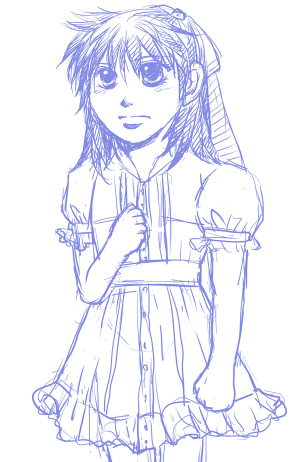

「騎士と姫君」更新です。イベント行ってきたりでちょっと間が空きました。
えーと…上の絵は…この話を読んでくださっている方にはわかるかなあ、という感じで…。7歳くらいのアイクってことで。描きたいと思っていたおめかしアイク。ちょっと恥ずかしがりながら実は嬉しいと思っておめかししてるといいよ。
あ、拍手ありがとうございますー！
まいどまいど嬉しく受け取っております…ｖ
というわけで、以下より更新分の内容について。 さて、今度は弓での訓練ですが…
弓兵との訓練って実際どうなのよとか思いつつ書いたりも…。実際に弓騎兵を運用するとなったら隊を組んで打って離れて交代交代で、という感じかな。あまり単騎で戦わないと思う…。ゲーム的にも打ったら再移動で離れて…とやってこそですし（テリウスシリーズではあまり使いどころがなかったけど聖戦ではわりと有用だったかな…）
弓歩兵だったら奇襲が主かな。城壁の上からとか物陰とかからとか。小回りが効くから単独でどこかに潜んでいたりとかして…。隊で動くときと狙撃手的に単独で動く場合があるか。しかし暁のシノン（というかサジタリー）みたいなのは反則だｗｗ あれはすでに弓兵の域を超えてるｗｗ 守備は固いし避けるし直接攻撃可能だしｗｗｗｗ
というのはにょた的にはどうでもいいといったらいいんですが（……）しかしにょたであってもアイクなので戦闘とか訓練の描写が入ってしまう…。
つーか、ジョフレのお姫様抱っことかを書きたかっただけという話ｗｗｗ
もう、騎士と姫ってきたらお姫様抱っこまでやるしかないだろうと！！
そしてシノン。なんか…シノアイはアイクがにょたであってもなくても喧嘩でもないんですが訓練やら戦闘描写が欠かせない…。まあ、18章のイベントからしてアイクがシノン倒して仲間にするってくらいだから…。そういうふたり。
ウチの恒例、シノンはまず物陰から眺めているっていう。いいんですよ、暁のムービーでも木陰に潜んで活躍してたから！ そういうキャラなんですｗｗ つか、弓兵の習性なんですよｗ
やっぱりシノンは書きやすい。ある意味ストレス発散にすらなるｗｗ
もうちょっと話は続きますですよ。あとちょっと。
いいところ見せてくれ、シノンって感じで…。
ひそかに物陰から眺めるシノンをさらに眺めているフォルカが潜んでいる件について。